Hola, soy Denis Grijalva. Soy apasionado por la tecnología, con sed de aprendizaje. Tengo habilidades sólidas en la resolución de problemas técnicos, liderazgo de equipos y adaptabilidad a nuevos entornos y tecnologías. Además, me comprometo con los más altos estándares éticos, valorando la integridad y la responsabilidad en el manejo de datos y sistemas de información.
Analiza, implementa y evoluciona.
Logros alcanzados juntos son más significativos.
Creemos juntos algo más grande que la suma de nuestras partes.
La integridad define nuestro camino.
Siempre buscando aprender algo nuevo.
Formación en desarrollo de software, bases de datos y análisis de datos.
Base en electrónica, circuitos y sistemas digitales.
Formación técnica en electrónica industrial.
Fundamentos de programación, lenguajes y POO, bases de datos, desarrollo web/móvil y arquitectura de software.
Desarrollo de Gestión de Fondos Rotativos y Módulo de Pagos Multiempresa (Django + SQL Server, integrados con un sistema contable legado), con dashboards de trazabilidad, reportería gerencial y flujos multi-rol. También administro la base de datos: consultas avanzadas, respaldos/recuperación y gestión de usuarios y permisos.
Más de 15 proyectos web, móviles, de e-commerce y automatización para clientes en Guatemala, Perú, España, Colombia, Brasil y Argentina.
Gestión de inventarios, soporte técnico y liderazgo de un grupo de 4 personas.
Los dos primeros proyectos tienen capturas reales y código abierto; el resto son mockups ilustrativos del tipo de interfaz, no capturas de sistemas reales, ya que ese código pertenece a clientes/empleadores.
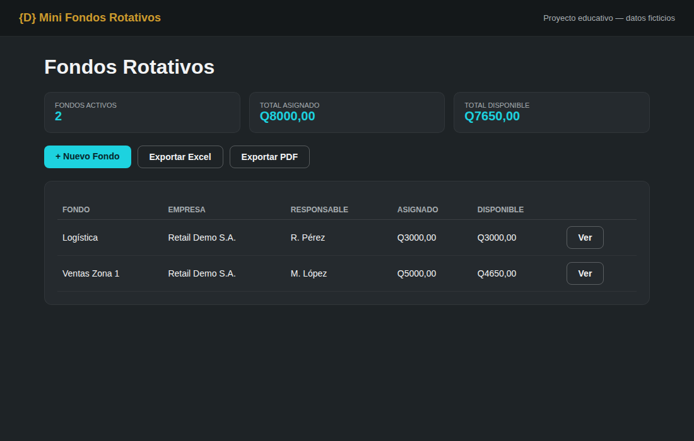
Versión educativa y pública de un sistema de fondos rotativos: flujo de aprobación de liquidaciones, saldo disponible automático y exportación a Excel/PDF. Datos ficticios.
Ver código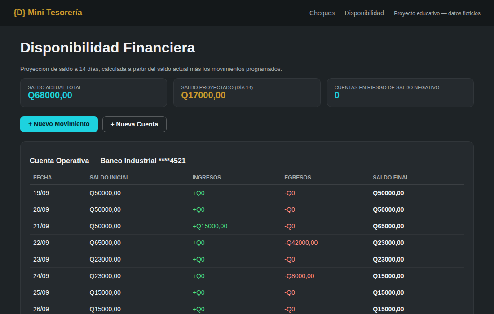
Dos módulos de tesorería con datos ficticios: control de cheques por estados y proyección de saldo a 14 días por cuenta bancaria.
Ver código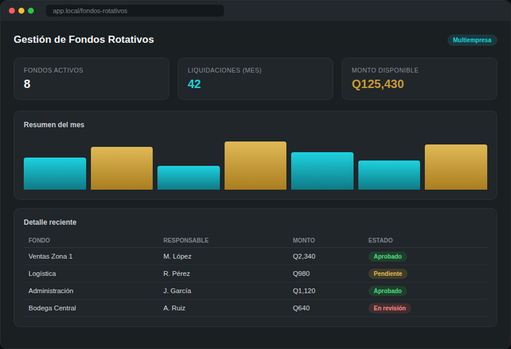
Sistema de caja chica multiempresa integrado con un ERP legado vía stored procedures, con flujo de aprobación en más de 10 estados y trazabilidad completa por fondo.
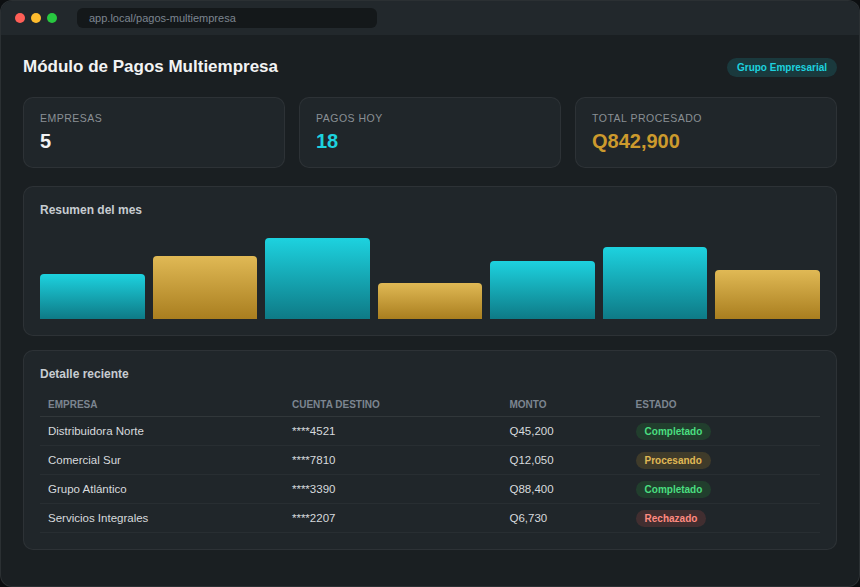
Gestión de pagos entre empresas de un mismo grupo, con dashboard gerencial, exportación a PDF/Excel y corte de caja automatizado.
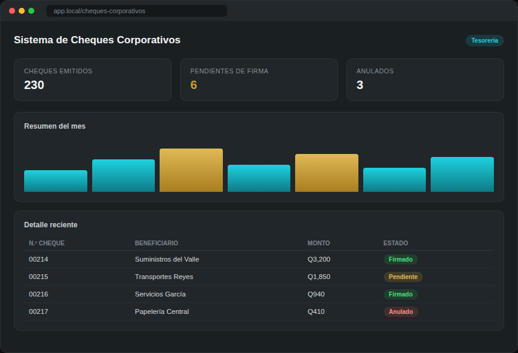
Levantamiento de requerimientos con stakeholders para digitalizar la emisión y el control de cheques de la organización.
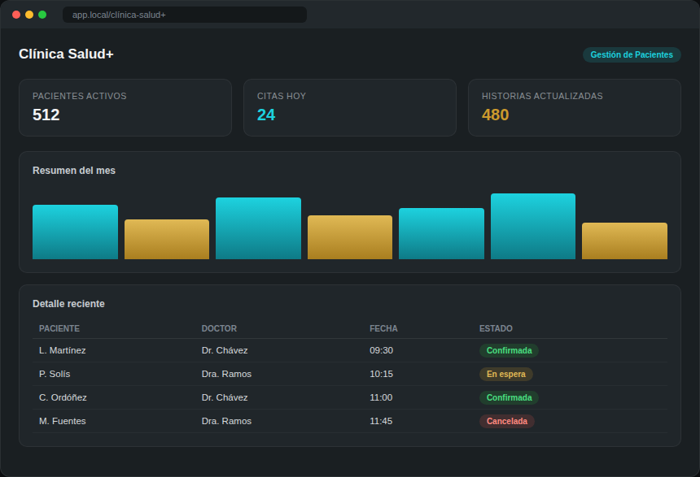
Plataforma web para administrar pacientes e historias clínicas de un centro de salud, con control de acceso por rol.
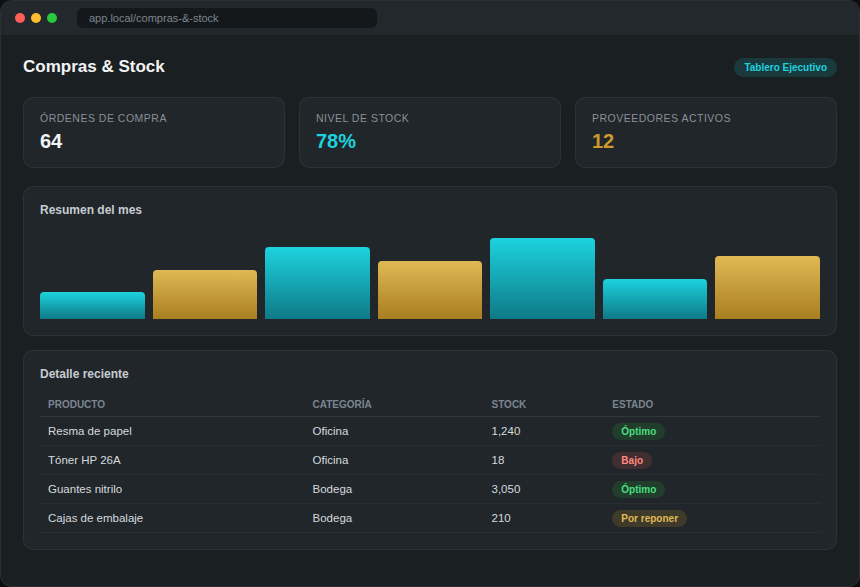
Tablero de control para monitorear compras y niveles de inventario en tiempo real para un cliente en Argentina.
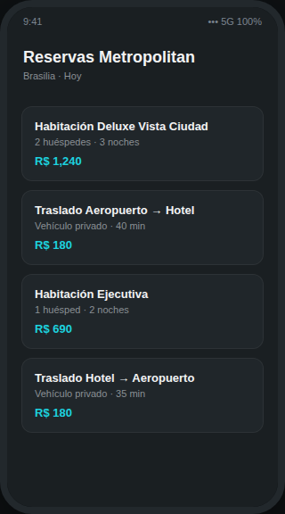
Aplicación móvil completa para reservar habitaciones y coordinar traslados de huéspedes de un hotel en Brasilia.
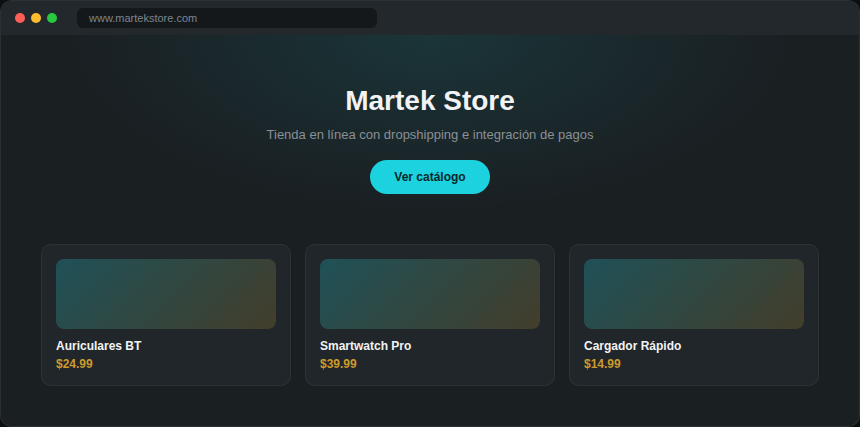
Configuración de tienda en línea con proveedores dropshipping e integración de pasarela de pagos para una empresa en México.
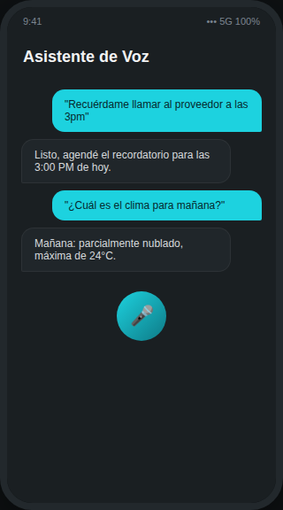
Asistente de voz que integra la API de OpenAI para interpretar comandos y responder en lenguaje natural.
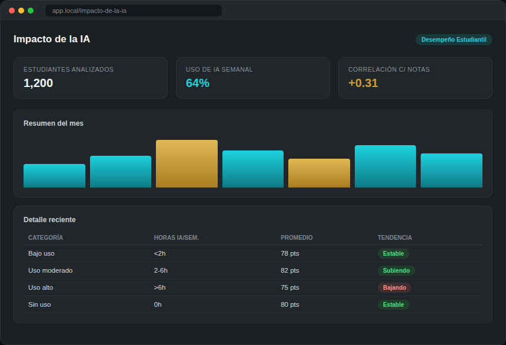
Informe ejecutivo interactivo sobre el impacto de la IA en el desempeño estudiantil, construido a partir de un dataset de Kaggle.
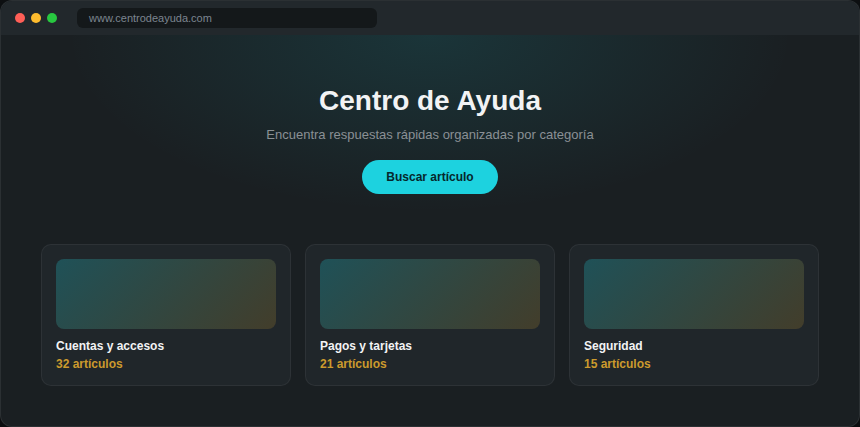
Portal de ayuda con artículos organizados por categoría para los clientes de un banco en Chile.
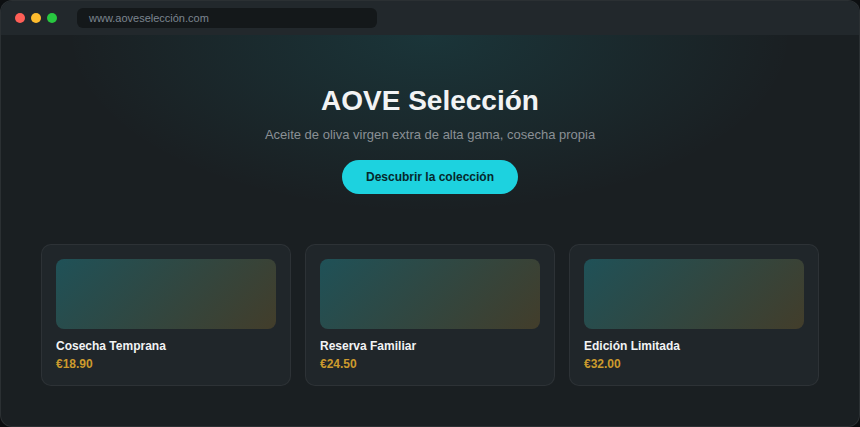
Sitio de comercialización de aceite de oliva virgen extra de alta gama, con enfoque editorial y de marca.
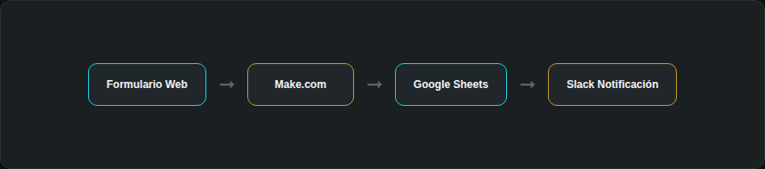
Flujos de automatización entre aplicaciones para eliminar tareas manuales repetitivas de un equipo.
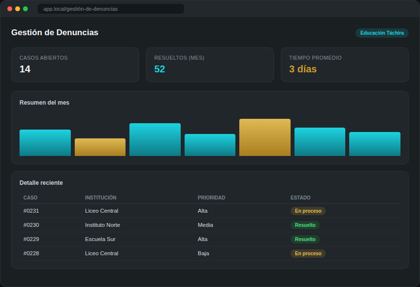
Aplicación para canalizar y dar seguimiento a denuncias de bullying dentro de instituciones educativas.
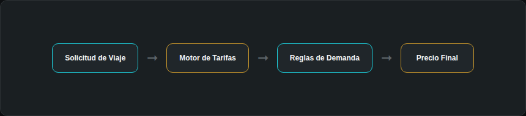
Colaboración en el backend de precios dinámicos para un consorcio de transporte en Perú.